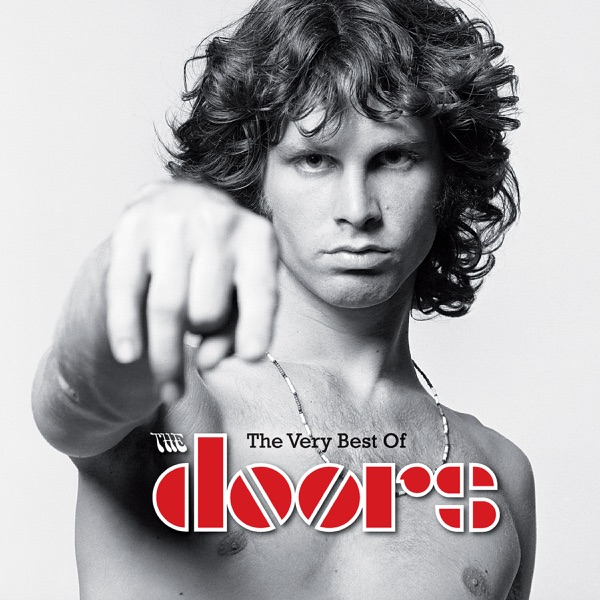

The Doors - The Doors

[ ](https://bandcamp.com/search?q=The-Doors%20The Doors)
](https://bandcamp.com/search?q=The-Doors%20The Doors)


Información del álbum facilitada por discogs.com:
Fecha de lanzamiento: 1967
Géneros: Rock
Estilos: Psychedelic Rock
Tracklist: A1. Break On Through (To The Other Side) (feat. The Doors) 2:25
A2. Soul Kitchen (feat. The Doors) 3:30
A3. The Crystal Ship (feat. The Doors) 2:30
A4. Twentieth Century Fox (feat. The Doors) 2:30
A5. Alabama Song (Whisky Bar) (feat. Bertolt Brecht & Kurt Weill) 3:15
A6. Light My Fire (feat. The Doors) 6:50
B1. Back Door Man (feat. Chester Burnett & Willie Dixon) 3:30
B2. I Looked At You (feat. The Doors) 2:18
B3. End Of The Night (feat. The Doors) 2:49
B4. Take It As It Comes (feat. The Doors) 2:13
B5. The End (feat. The Doors) 11:35